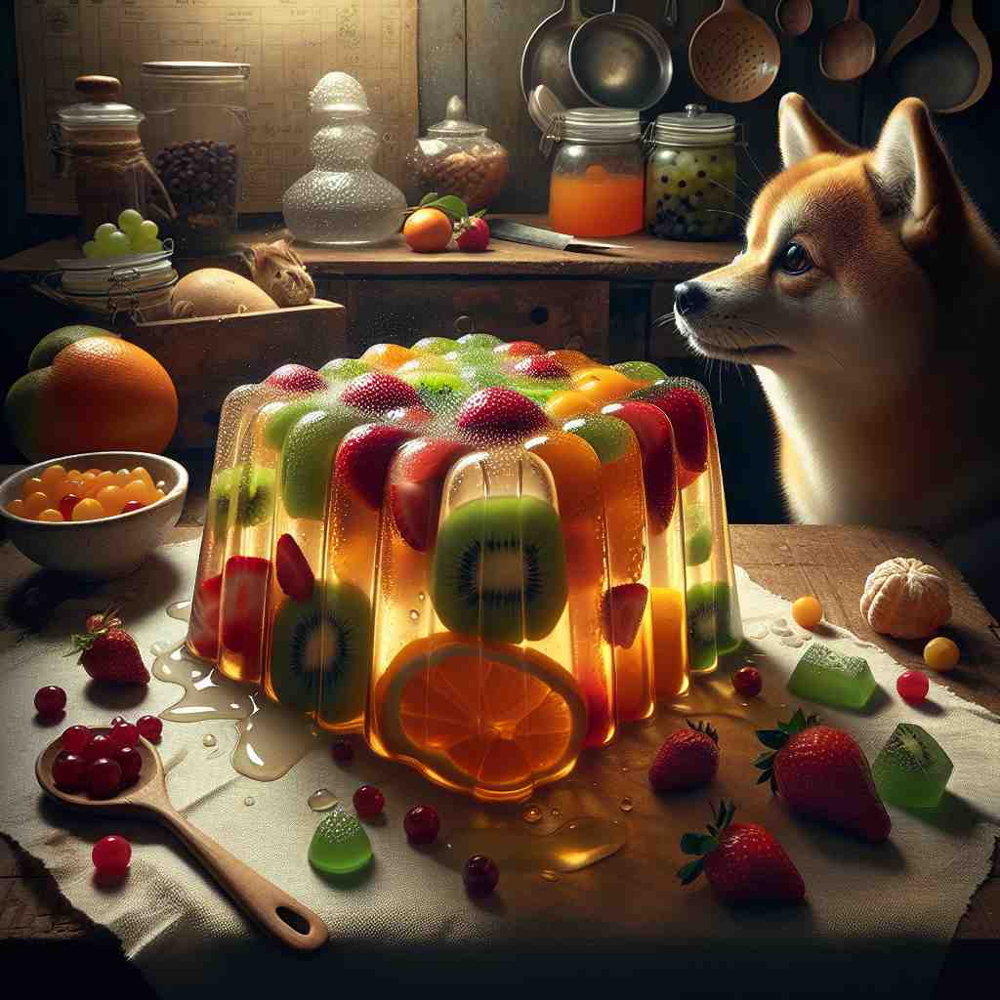
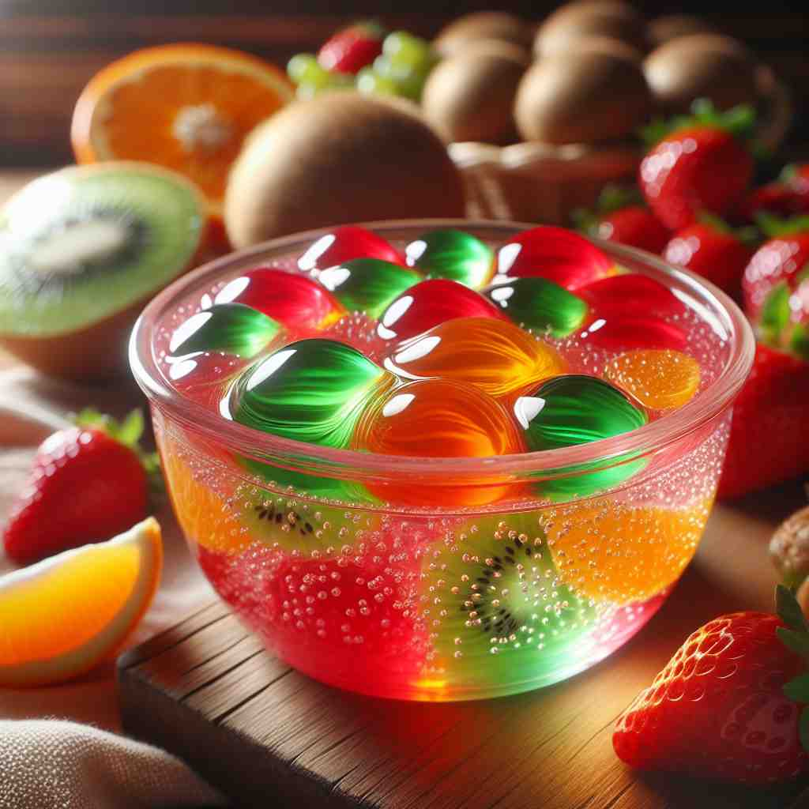

💬 The colorful fruits are added to the gelatine dessert. 五颜六色的水果被添加到明胶甜点中。

💬 The fruit jelly dessert is very colorful and refreshing. 果冻甜点色彩缤纷，清新可口。

💬 We enjoyed a delicious gelatine dessert at the party. 我们在派对上享用了美味的明胶甜点。

💬 The kids enjoyed the colorful gelatine cake at the party. 孩子们在派对上享用了五颜六色的明胶蛋糕。
🧠 明胶（gelatine）的核心含义是一种蛋白质物质，具有独特的物理特性：遇水变软，溶于热水。这种特性使其在烹饪中广泛应用于制作果冻和甜点。通过联想这种物质的特性，可以轻松理解其在摄影中作为感光剂载体的应用，以及作为一种果冻状甜点的衍生含义。记忆时，可以想象一块透明的果冻，既能联想到其在食品中的应用，又能联想到其在摄影胶片中的用途。
🗝️ n. a colourless or pale yellow protein substance that becomes soft when wet and dissolves in hot water 一种无色或淡黄色的蛋白质物质，遇湿后变软，并可在热水中溶解。
🎭 在一个家庭厨房中，妈妈正在准备美味的果冻。她把一包无色的明胶粉倒入热水中，轻轻搅拌。没过多久，粉末就溶解在水中，形成了一种透明的液体，等待成为果冻。这清晰展示了明胶在热水中溶解的特性。
💬 Gelatine is often used in cooking to make jellies and desserts. 明胶常用于烹饪中制作果冻和甜点。
🌳 词根 'gelat-' 来源于拉丁语 'gelatus'，意为凝固。后缀 '-ine' 常用于形成名词，表示一种物质，构成交替形式 'gelatine'，含义为 '明胶'。
🕸️ 1. gel: 凝胶 2. gelatinous: 凝胶状的 3. congeal: 凝结
💡 记忆 'gelatine' 时，可以联想到 'gel' 的意思是凝胶，结合 '-ine' 表示一种物质，从而想象为一种 '凝胶状的物质'。